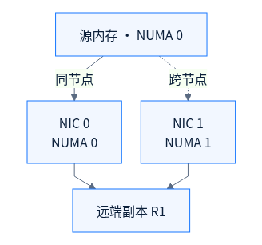

双网卡跑 Mooncake，RDMA 流量到底走了哪张卡？
摘要：同一段源内存，拓扑上更近的网卡、注册与连接条件允许的网卡、实际提交 WR 的网卡，可能是三张。本文用一台双 NUMA、双网卡主机跟一次传输，并用只改本地 HCA 的对照验证选路。
一台服务器上有两个 NUMA 节点，每个节点各挂一张 RDMA 网卡。推理实例 A 的发送进程绑定在 NUMA 0 的 CPU 上，源缓冲区也分配在 NUMA 0；两张网卡都能连到远端同一个 R1 Segment。
A 发起一次主机内存到 R1 的传输。拓扑上更近的网卡，未必就是这次实际提交 WR 的网卡。
多网卡先带来的是更多选择，吞吐并不会自动线性增长。
场景：源缓冲区只在 NUMA 0
拓扑上，NUMA 0 的内存离 NIC 0 更近；NIC 1 在 NUMA 1，跨节点访问要经过更长的 PCIe/UPI 路径。

图注：发送进程与源缓冲区均在 NUMA 0，NIC 0 同节点、NIC 1 跨 NUMA；虚线表示源缓冲区到 NIC 1 的跨 NUMA 访问，实线箭头是两张 NIC 到 R1 的候选路径。本文尚未实测，不标实际选中路径。
这只是“更近”的答案，不是“一定用它”的答案。真正选择时，Mooncake 还要看源地址落在哪段注册内存里、哪些 HCA 的 context 可用、远端是否有对应的 rkey 和 rail。
先选 transport，再选 HCA
路径选择可以分两层理解。
第一层是 MultiTransport::selectTransport，按段描述里的协议、请求目标地址和同机条件选择 transport。跨机 RDMA 与 TCP 的切换发生在这一层。
第二层在 RDMA 内部，再选具体 HCA 或 rail。对本地发送端，RdmaTransport 会按源缓冲区的地址和长度，在本地段描述的拓扑里调用 selectDevice；对远端，WorkerPool::selectPeerDevice 会按目标段描述选择远端 HCA、校验 rkey，并在 rail 不可用时尝试其他 device_id。
这两层不能混为一谈。RDMA 内部换一条 rail，只改变 RDMA 路径，系统仍然是 RDMA；同样，也不能假设任何 RDMA 故障都有自动 TCP 兜底。
更近的 NIC，不一定在可选集合里
本地 selectDevice 先按源缓冲区的地址范围找到覆盖它的注册缓冲区，再在本地拓扑的 preferred/avail HCA 列表里选择。拓扑发现会按 NUMA 节点和 PCI 距离计算每个位置的偏好，所以 NUMA 0 的源缓冲区通常会把 NIC 0 放进 preferred 集合。
但“更近”只说明它更可能在候选集合里，不能推出它一定被选中，也不能推出只有它可选：
preferred 集合可能有多个 HCA，首次选择在 preferred 内随机或轮询，不是每次严格取距离最近的一张；
如果某张 HCA 没有覆盖源地址的注册缓冲区，或它的 context 不 active，它不会被选中；
远端还要有可用的 rkey 和 rail；
selectPeerDevice校验失败时会换 device_id 或标记失败。
因此，看到拓扑图上 NIC 0 更近，只能说明它更可能在候选集合里。它不能单独证明这次传输实际走了 NIC 0。
运行时故障会改变可选集合
启动时可用的 NIC，运行中也可能失效。
Topology::discover 在启动时检查设备可访问、能打开、且至少有一个 active port，resolve 把 HCA 名映射成稳定索引，随后把拓扑随段描述发布。运行中某个 context 失效时，worker 会重试其他设备；本地拓扑刷新会把 inactive context 从对端可见的矩阵里移除。
设备索引还有一个实现约束：RDMA transport 的 lkey/rkey 数组和 context 数组按索引存储。移除不可用设备时不能压缩数组，否则原来的索引会指向另一张网卡。这属于“可选集合如何变化”的细节，不是拓扑更近的证明。
用 CPU 主机内存做一组可控实验
下面是一个实验设计，不依赖 GPU，也不需要推理框架。本文尚未实测，因此不给测量结果。
最小对照只改变一个变量：允许使用的本地 HCA。其余条件固定：
一台双 NUMA 主机，发送进程绑定 NUMA 0 的 CPU，源缓冲区分配在 NUMA 0；
NIC 0 在 NUMA 0，NIC 1 在 NUMA 1；
远端 R1 Segment、传输方向（A 写入 R1）、大小、并发度和连接参数保持一致；
每次传输前后读取本地两个端口的计数增量，并记录实际选中的本地 HCA（如果有设备选择记录）。
开始比较前，先确认源内存的实际落点。不要只凭分配代码的意图；用分配器记录或系统提供的 NUMA 落点信息确认这段源区间确实在 NUMA 0，再开始比较。
四组实验：
两张网卡都允许，源缓冲区在 NUMA 0；
只允许 NIC 0，源缓冲区仍在 NUMA 0；
只允许 NIC 1，源缓冲区仍在 NUMA 0；
源缓冲区改到 NUMA 1，再重复第 1 组。
这些观察分别支持什么：
设备选择记录显示 NIC 0，且只有 NIC 0 的端口计数增加：支持这次传输走了 NIC 0；
限制到 NIC 1 后传输直接失败：先查该 HCA 是否有覆盖源地址的注册缓冲区、context 是否 active，而不是直接归因于跨 NUMA 慢；
只看到“NIC 0 拓扑更近”，但端口计数没有变化：不能证明流量经过 NIC 0；
限制到 NIC 1 后吞吐下降，只能说明这组参数下 NIC 1 的路径更慢；不能直接外推到其他传输大小或并发度。
计数器要按方向读：本地发送端看各端口发送字节/包计数，远端看对应接收计数；不同驱动的计数宽度和单位可能不同。比较前先留一段基线，避开其他 Client、后台任务或重试带来的背景流量。如果两个端口在同一窗口内都有增量，仅凭总数无法区分“多个并发请求各走一张卡”“失败重试换卡”和“一次传输实际选路”，还需要按请求或 task 的设备选择记录、重试日志，以及把并发降到单次传输后再复测。
如果连端口计数都拿不到，这组实验只能作为设计，不能替代实际测量。只有选卡证据时，结论限定在选卡行为；吞吐和延迟差异需要相应的测量数据。
总结
这次传输要先回答三个不同问题：拓扑上哪张 HCA 更近；注册缓冲区、context 与远端 rkey/rail 让哪些 HCA 进入可选集合；实际 WR 由哪张 HCA 提交。前两个问题靠拓扑和配置判断，第三个问题要靠设备选择记录与端口计数增量确认。
最小对照只改“允许使用的本地 HCA”，其余条件固定；确认源内存落点后，再用发送/接收计数交叉验证。本文尚未实测，没有给出吞吐或延迟结论；只有选卡证据时，结论也只限于这次选卡行为。
源码延伸：Topology、MultiTransport、HCA 与 rail 选择。版本基线为 v0.3.13.post1。